| Vitamin A(Retinol) |
Cod-liver oil, liver, kidney, milk products, butter, yolk, as provitamine A in carrots |
Normal growth, function and protection of skin, eyes and mucous membrane |
Growth stop, night blindness |
Impaired visions, headache, nausea, vomitus, tiredness, skin change |
approx. 2mg (At carbohydrates-packed nutrition some more) |
 |
| Vitamin B1(Thiamin) |
Wheat germs, wholemeal cereals, peas, heart, pork, barm, oatmeal, liver, brown rice |
Important for the nerve system, liver damage, inefficiency, pregnancy, mosquito protection (high-dosed), production of energy, affects the carbohydrates metabolism, important for the thyroid function |
Heavy muscle- and nerve disturbances, tiredness, dyspepsias, dropsy, cardiac insufficiency, cramps, paralyses, prickle in arms and legs |
none |
approx. 2mg (At carbohydrates-packed nutrition some more) |
 |
| Vitamin B2 (Riboflavin) |
Milk products, Meat, wholemeal cereal, cheese, eggs, liver, sea-fish, green leafy vegetables, whey powder |
Important for body growth, untilization of fats, protein and carbohydrates, well for skin, eyes and nails, important energy bringer, oxygen transport |
(rarely) skin inflammation, brittle nails, anaemia, callus attrition |
not known |
approx. 2 mg |
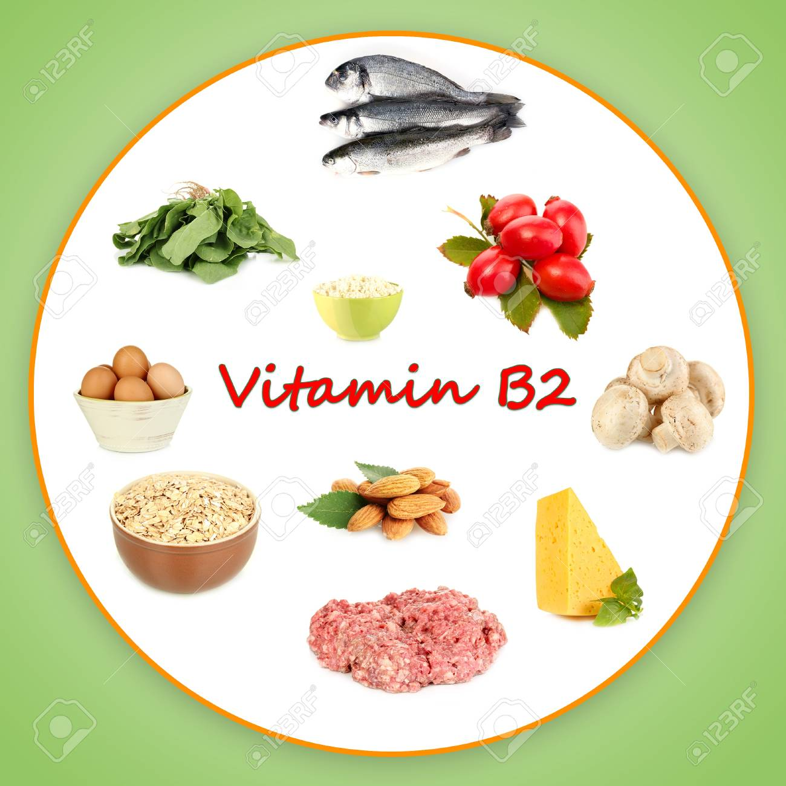 |
| Vitamin B3 (Niacin, Nicotine acid) |
Barm, peanuts, peas, liver, poultry, fish, lean meat |
Building and degradation of fat, protein and carbohydrates, good sleep |
Skin and mucosa inflammation, headache, trembling, vertigo, sleep disturbance, depressions, feeling of prickle and deafness in the limbs |
(with over 100mg a day) pruritus, nausea, allergies |
13 - 16 mg |
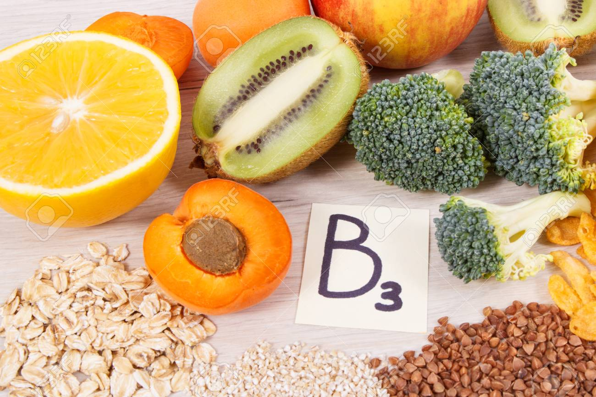 |
| Vitamin B5 (Pantothen acid) |
Liver, vegetable, wheat germs, asparagus, crabs, meat, sunflower cores, Pumpernickel |
Against turning grey, hair loss, hair and mucous membrane illnesses, necessarily for the dismantling of fat, proteins and carbohydrates |
Nerve malfunctions, bad healing of wounds, early turning grey, weakened immune system |
Over urine excreted |
approx. 10 mg |
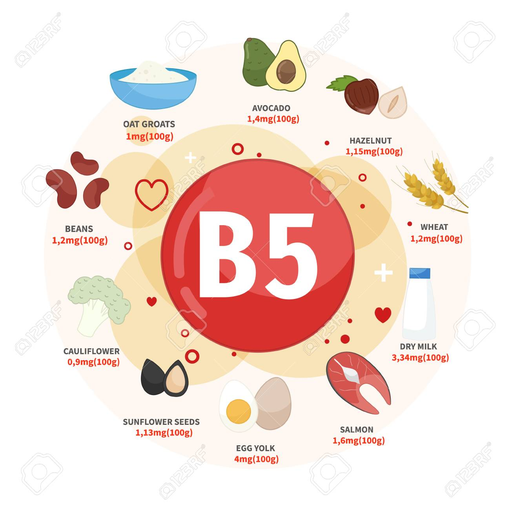 |
| Vitamin B6 (Pyridoxin) |
Bananas, nuts, wholemeal products, yeast, liver, potatos, green beans, cauliflower, carrots |
Travel sickness, neuralgia, liver damage, premenstrual syndrome, digestion of protein, most important hormone in pregnancy together with folic acid, detoxication |
(rather rarely) intestine problems, bad skin, tiredness, rough corners of the mouth |
With intake of this for a longer time in form of tablets it can deposit in the body tissue and lead to nerve damages. |
approx. 2 mg |
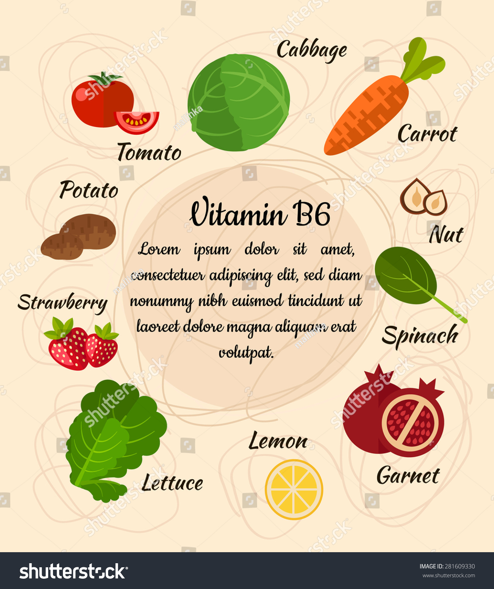 |
| Vitamin B7 (Biotin, Vitamin H) |
Liver, cauliflower, champignons, wholemeal products, eggs, avocado, spinach, milk |
Skin deseases, loss in growth of hairs, liver damage, assists metabolism, carbohydrate and fatty acid activity, together with vitamin K it is needed for building up the clotting factors |
States of exhausting, skin inflammations, muscular pains, hair loss, nausea |
not known |
approx. 0,5 mg |
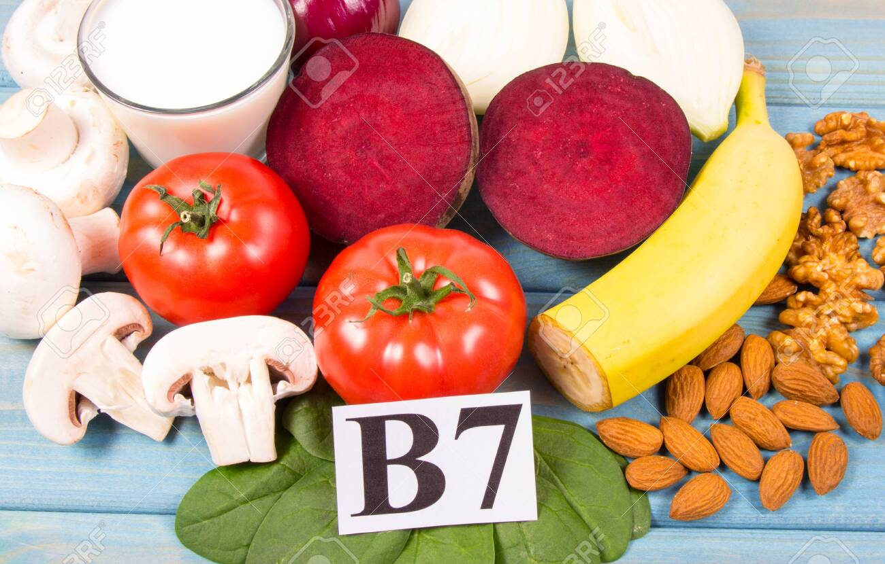 |
| Vitamin B9 (Folic acid, Vitamin M) |
Liver, wheat germs, cucurbit, champignons, spinach, avocado |
Liver damage, cell division, healing and growth of muscles and cells, protein metabolism |
Anaemia, digesting disturbances, disturbances of hair -, bone and cartilage growth |
Allgergies, sleep disturbances and bad moods (with more than 15 mg a day) |
approx. 160 µg |
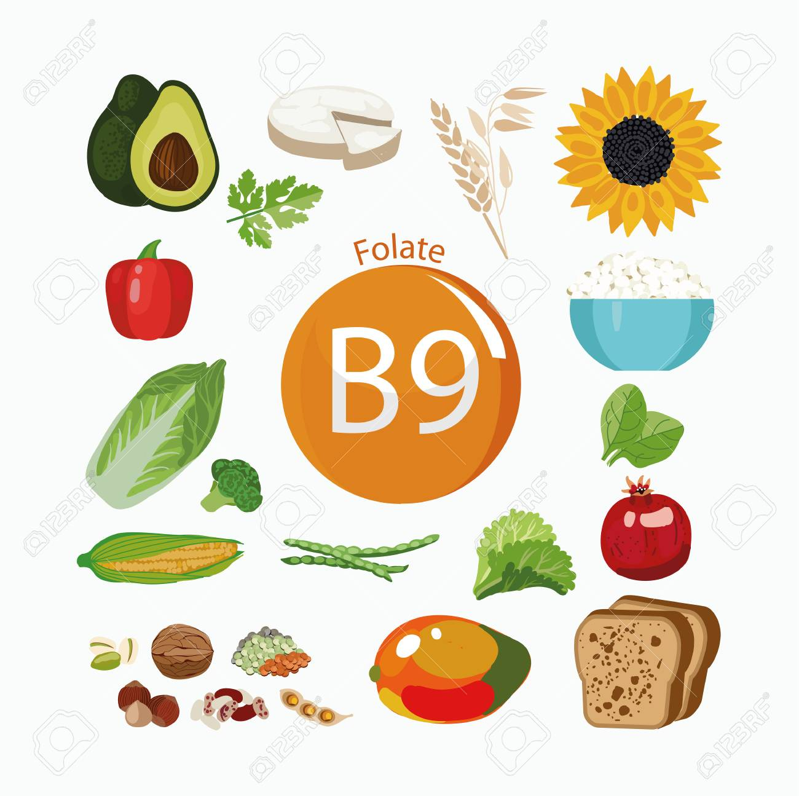 |
| Vitamin B12 (Cobalamin) |
Liver, milk, yolk, fish, meat, oysters, quark, barm |
Building substance of cytoblast and erythrocyte, nerve pains, skin and mucosa inflammation, liver damage |
Aenaemia, nerve disturbances, nervous disturbances, changes in the lung and the spinal marrows |
Not possible, because surplus B12 will be excreted by the body |
approx. 5 µg |
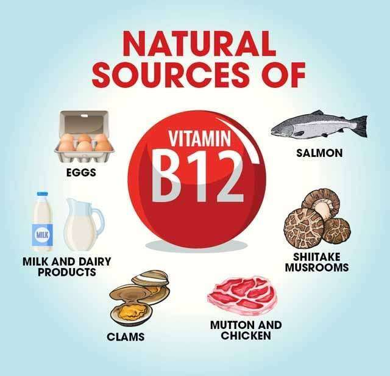 |
| Vitamin C (ascorbic acid) |
Dogroses, sea buckthorn, citric fruits, black currants, potatoes, paprika, tomatoes, collard, spinach, vegetables, radish |
Inflammation and bleeding-restraining, assists the body's defences, protects cells against chemical destruction, activates enzymes, structure of connective tissue, bones and dental enamel, faster healing of wounds, stabilisation of psyche |
Gum-bleed, tiredness, joint pain and headache, bad healing of wounds, lack of appetite, scurvy, inefficiency |
In the case of overdosing in form of powder and pills nausea, vomiting and urine stones can be the result. |
approx. 75 mg - 200 mg |
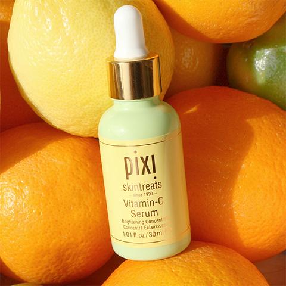 |
| Vitamin D (Calciferol) |
Cod-liver oil, liver, milk, yolk, butter, sea fish, herring, champignons, avocado |
Regulation of calcium- und phosphat household, structure of bone, assits admission of calcium |
Bone curvature and softening, increased infection sensitivity, amyasthenia |
(only with man-made Vitamin D) Calcium deposists in bones, heart muscle, blood vessels, stomach, headache, vomiting, swindle, gastro-intestinal diseases |
approx. 5 µg |
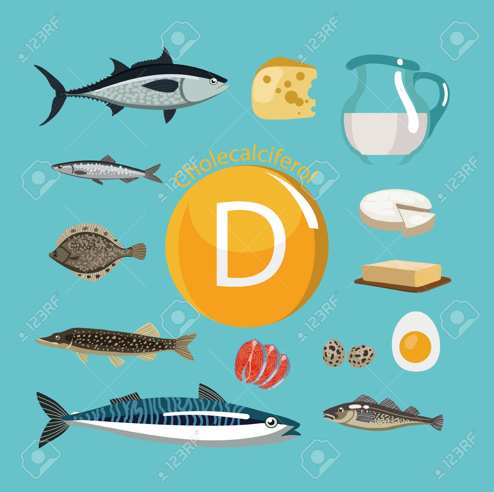 |
| Vitamin E (Tocopherole) |
Sunflowers -, corn -, Soja and wheat germ oil, nuts, flaxseed, salsify, peperoni, collard, avocado |
Stabilization of the immune system, anti-inflammatory, cell replacement, protection from radicals, modulates cholesterol level and hormone household, important for blood vessels, muscles and reproduction organs |
(rarely) amblyopia, tiredness, amyotrohia, dislike, reproduction problems |
(particularly by synthetically manufactured caps) bad healing of wounds, deficiency symptoms, swindle, nausea |
10 - 30 mg (with fat-enrich nutrition more) |
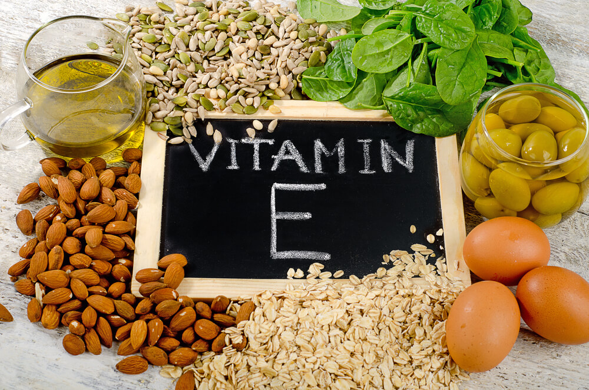 |
| Vitamin K (Phyllochinone) |
Eggs, liver, green collard, green vegetable, bulbs, oatmeal, kiwi, tomatoes, cress |
Necessary for formation of the blood clotting factors |
High doses of vitamin A and E work against vitamin K. |
With intake for a longer time, it can become toxid, bleedings, hot flashes, renal diseases |
approx. 2 mg |
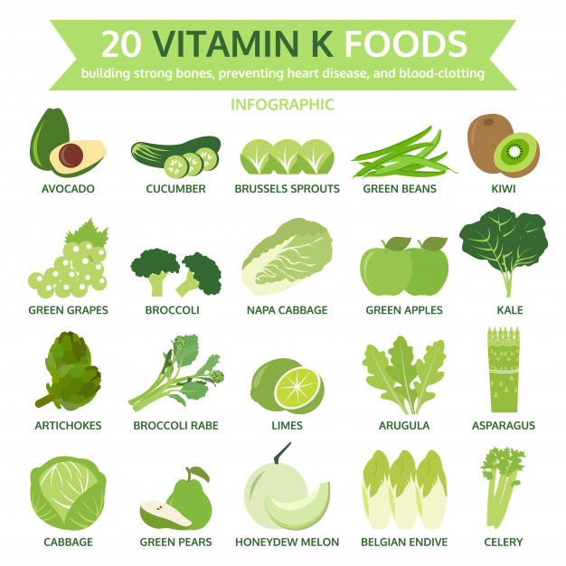 |